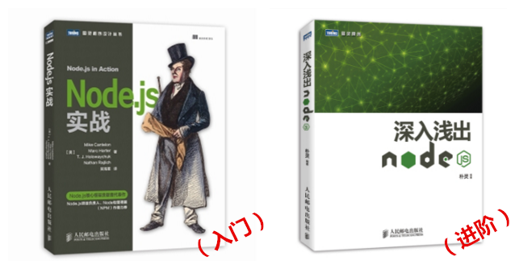

请介绍下您和您的工作？
桑世龙，我的 github 和 cnode 都是 i5ting。目前在天津创业，是空弦科技 CTO，公司主要使用目前非常流行 MEAN（mongodb、express、angularjs/ionic、node.js）技术栈，我本身也算 Node.js 的布道者吧，目前和 StuQ 合作了《Node.js 微信开发》在线课程，已经开了 2 期，三月中旬就开始录制视频了，另外我也在写《一起学 Koa》一书。
您是如何成长为大牛的，有什么样的学习路径？
我大学时候非常穷，学的又是信息管理与信息系统专业，学长学姐们都不好找工作，正好当时学校有 java 培训，所以当时就想去参加培训，可是培训费很贵，于是帮着招生，然后蹭课，后来发现，大部分人都没学好，我却走上了这条路。
大学时，在洗浴中心打工，每天站 22 小时，客人光溜溜的过来了就递个衣服过去，其他时间都是站着没事干，前后我一共干了 20 天，那种无所事事，时光流逝的感觉让人恐惧，想我也是堂堂大学生，每天 22 小时 40 元收入，干这种没有意义的活实在是没劲，所以那之后就不干了，宁可苦点，也尽量学习，坚信通过学习可以赚更多。
最开始也是没有目标的，那时候唯一的想法就是赚钱，我的“名言”：“没有目标的时候，向钱看”。可是做了几年，我发现我可以通过努力学好，并做很多非常有成就感的事儿，这其实是让人非常快乐的事儿，不断的遇到问题，解决问题，积累信心，慢慢就开始热爱这个行业了。
最难的是坚持，从坚持里体会出乐趣也是人生一大乐事。我的几个习惯也都是这样坚持的，比如素食，阅读，诗歌等，最开始都很枯燥无聊的，不断的体会，总结，才能发现里面的好处，自然就了乐趣，自然就有信心面对所有事儿了。编程的快乐在于每一天都会遇到不一样的问题，遇到问题，解决问题。
最后说一下关于学习，我总结的 3 个阶段：第一是跟人学，学习惯，第二是跟书学，虽然言有尽，但都是总结的经验，第三是自己悟，若无长期积累，很难有所悟。我毕业第一年，有幸遇到 IBM 的刘文涛哥，那时我 linux 反复都学不好，他每次不爱带电脑，就做我那里在 aix 上调试 db2，他操作的时候我在背后看着，偷学，刘哥人非常好，他也知道我想学，走的时候也不关闭终端，于是我就翻查shell历史，一个命令一个命令的记，然后自己查，实在不行再请教他，虽然很曲折，但我学会了，其实别人主动教的机会非常少，只要自己主动观察，学习别人的优点、习惯，进步还是会很快的。我的另一个贵人是郭会强，是《Grails 权威指南》译者之一，我那时候也是初生牛犊不怕虎，跟着他们一起翻译 Grails 的中文手册，那时连svn都不会用，英文也很烂，我翻译了 2 章，然后他帮我上传，review，对于我一个新人来讲，他给我一个机会，虽然到现在我都没见过他，后来我比较喜欢英文翻译就是因为这个契机。
如果让您从头学习，您会更注意哪些方面的改进？遇到哪些一些成长瓶颈，后来是怎么克服的？
改进：方向上更专一点，掌握开源项目玩法，多多参与社区活动，和有意思的人有激情的人一起工作（StuQ 的小伙伴都好棒，我都想把他们挖过来）。
遇到瓶颈克服办法：1）跟年长者多聊天；2）参与开源项目和社区，多分享，多反思。
请推荐一个您认为的最佳学习路径！根据学习路径推荐几本技术书籍（或者经常浏览的网站、博客、公共号）。
最佳学习路径：1）找本书花一周时间啃下来；2）尝试，反复练习；3）每天到 github 上找几个模块，学习用法，思路，技巧等；4）抓自己的痒，编写自己的开源项目，持续改进，向标准看齐。
不过这个最佳学习路径是针对有自学能力的人的，如果是新手，StuQ 的微课程其实还不错，找的人也比较专业，都是行业内比较牛又比较低调的人，通过在线视频讲解，实战，在线答疑，课后复习课件、视频的方式，可以很大程度上解决大部分的自学问题。学完后，基本就可以自己按照上面学习路径自学了。
学习 Node.js 的书籍：

推荐国内比较专业的 cnode 社区 https://cnodejs.org，有任何问题都可以发帖提问，会有很多人回答。
其他就数https://github.com/trending，每日必看。
推荐这个领域您常用的软件及工具。
Linux
oh-my-zsh
git
一个文本编辑器，textmate，sublime 等，不要用 ide，不要用鼠标
dash 或 zeal 查看本地文档
您心中的优秀程序员是怎样的？
有追求，有能力、积极乐观、热爱生活，乐于分享，能够适应技术和社区的变化。
除了工作，您还有其他爱好吗，平时都是怎么度过节假日？
运营公众号《Node 全栈》；
写开源项目，讲课《Node.js 微信开发》，写书《一起学 koa》，在 cnode 和微信群里给大家答疑，参与一起社区活动，比如 archsummit 大会等；
书法，围棋、诗歌；
节假日能陪媳妇就陪媳妇，不能陪媳妇就写代码。
您喜欢有什么样特质的技术人员加入您的团队？
踏实、好学、不太笨的小伙伴，目前我们也在招聘 Node.js，前端，iOS，如果大家有兴趣，可以把简历邮件给我 sang@aircos.com，标明应聘职位。

桑世龙老师参与的前端会员学习计划正在招募学员中，前端会员学习计划是面向前端从业人员的专题实践课程，每两周 1 次，全年 24 次课程分享。邀请一线的资深前端专家分享大数据相关的项目经验，还原应用场景，从而提高学员在项目中解决问题的能力，让每位学员能够学以致用。扫描二维码进入课程咨询群。
![]()